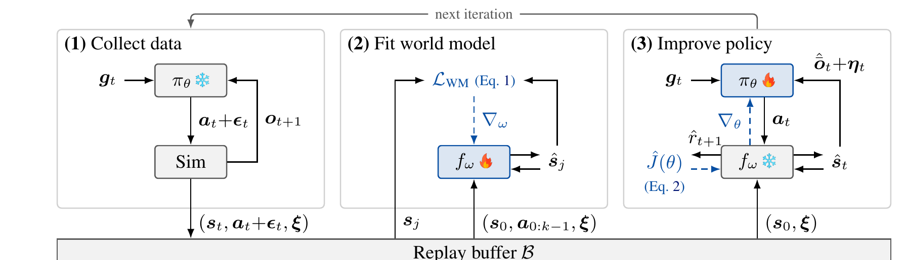
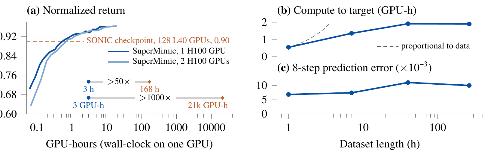
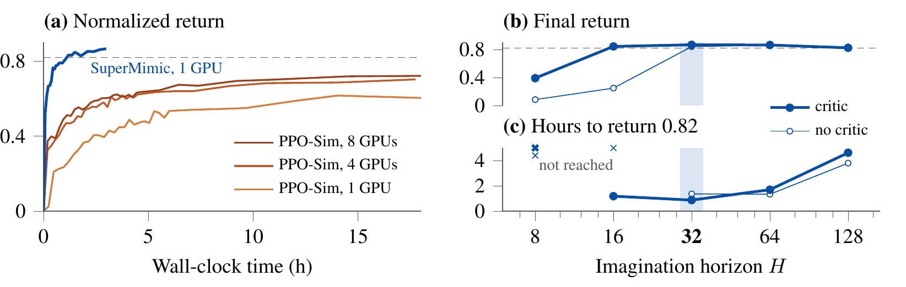

目录 · 9 节
1它到底在解决什么问题？2整体流程：三步循环3世界模型学的是什么，怎么学？4策略怎么从世界模型里拿到梯度？5为什么还需要价值网络？6实验：省下来的算力从哪来？7我认为它的局限8一个推荐/搜索团队可以怎么试9结论让人形机器人跟着大量人体动作数据学全身控制，现在的主流做法很费算力：最强的动作跟踪器 SONIC（此前公开的、用 PPO 在集群上训练的方案）要在 128 张 GPU 上训练约 7 天。SuperMimic 的出发点是，动作虽然千差万别，机器人身体的物理规律是同一套。它先用仿真器的日志数据学一个可求导的世界模型，再让策略在这个模型里做短程想象，直接对动作求梯度。结果是单卡训练 3 小时，回报就超过了 SONIC，GPU 时数省了 1000 多倍。瓶颈从算力转到了动作数据本身，扩更多动作变得便宜。
做推荐和搜索的人也值得读这篇，因为它回答的是一个通用问题：环境本身不能求导、采样又贵的时候，能不能先学一个可求导的“环境替身”，再把策略梯度直接从替身里反传回来。在 129,514 条动作的基准上，SuperMimic 单卡 3 小时只在 25 条上摔倒，SONIC 是 179 条；两张卡训练 9.8 小时后一条都不摔。
它到底在解决什么问题？
动作跟踪的任务是：给机器人一段人体动作捕捉数据（比如走路、侧滚、空翻），机器人每一步看自己的关节状态和接下来几帧参考动作，输出关节目标位置，尽量把动作做得一样，而且不摔倒。数据越多样，学出来的控制器越通用。
麻烦在于训练方式。主流做法用 PPO 这类无模型强化学习，在仿真器里大量试错来更新策略。PPO 不知道物理规律长什么样，每段动作都要靠大量带噪声的试错重新摸一遍“这样用力会怎样”。下面这张示意表说明了浪费在哪里：
| 动作片段（示意） | 每段要学的 | 各段共用的 |
|---|---|---|
| 慢走 | 何时迈哪条腿 | 同一副身体的质量、关节、脚和地面的接触 |
| 侧滚 | 躯干怎么贴地翻转 | 同上 |
| 原地空翻 | 起跳发力和落地 | 同上 |
右边一列对所有动作都一样，但 PPO 没有地方把它存下来，只能在每段动作的试错里重复估计。动作库从几小时涨到几百小时，算力也只能跟着涨。SuperMimic 把共用的那一列单独学成一个模型，让所有动作共享。
整体流程：三步循环

训练是一个不断重复的循环，每轮三步：
| 步骤 | 输入 | 做什么 | 产出 |
|---|---|---|---|
| 采数据 | 当前策略、参考动作 | 在 GPU 仿真器 MuJoCo Warp 里执行带噪声的动作 | 状态、动作、仿真参数，写进回放缓存 |
| 拟合世界模型 | 缓存里的 8 步片段 | 从片段起点出发，按记录的动作连续预测 8 步，和真实记录对比 | 更新后的世界模型 |
| 改进策略 | 缓存里随机抽的起点状态 | 世界模型冻结，策略在模型里想象 32 步，把回报对策略参数求导 | 更新后的策略和价值网络 |
这三步每轮都跑，世界模型和策略一起变好，而不是先训好模型再训策略。旧策略采的数据也能继续用来拟合世界模型，因为物理规律和是哪个策略采的数据无关。下面逐步拆开。
世界模型学的是什么，怎么学？
为什么需要它？仿真器能算物理，但它不提供梯度，接触碰撞这类地方本来也不光滑。SuperMimic 学一个神经网络当仿真器的替身。它的核心是动力学部分：给定当前状态、动作和这一局的仿真参数，预测下一步状态。旁边挂着三个输出头：奖励头看状态、动作和当前目标（参考动作里对应的帧），算这一步跟得像不像；摔倒头看状态和目标，给出摔倒概率；观测头看状态和仿真参数，给出机器人能读到的传感器读数。替身是一个三层宽 2048 的 MLP，天然可以求导。仿真器本身不需要改，所以它能接任何现成的刚体仿真器。
仿真参数指每一局随机设定的摩擦系数、传感器标定偏差、躯干质心位置。仿真器里的随机性只来自这些参数和传感器噪声，所以作者把参数直接喂给世界模型，让它保持确定性，只预测不含噪声的读数，噪声在模型外面另外加。
怎么训练？从缓存里取一段 8 步的真实记录，只给模型第 1 步的真实状态，后面 7 步都用模型自己上一步的预测往下推，动作照着记录走。每一步的预测状态、奖励、读数和真实值算平方误差，摔倒概率用 BCE 对齐。举个示意：第 1 步预测躯干高度差了 1 厘米，第 2 步就从这个有偏差的状态继续推，如果误差越滚越大，损失也越大。让模型在自己犯的错上继续预测，它才学会把误差拉回来，所以作者观察到，虽然只用 8 步训练，想象 32 步甚至更长也不会发散。
策略怎么从世界模型里拿到梯度？
这是全文的核心。策略更新时，世界模型的参数冻结。从缓存里随机抽一个真实状态作为起点，连同这一局记录下来的仿真参数一起取出，整段想象都用这组参数。策略看到模型给出的读数（再加上和真机一样的传感器噪声），输出动作；世界模型根据动作给出下一状态和奖励；如此重复 32 步，每一步的目标仍是参考动作里对应的帧。按每秒 50 步的控制频率，这不到一秒。论文没说想象从缓存里的一个起点状态开始时，策略需要的最近 10 帧观测历史和对应的参考动作片段怎么准备、每一步怎么往后推。
32 步的奖励加起来就是策略的目标。因为每一步都是可求导的网络，BPTT 可以把回报沿着“奖励 ← 状态 ← 动作 ← 策略参数”这条链一路反传到策略参数上。
它和 PPO 的区别用一个示意例子最好懂。假设某个关节的奖励是 ，当前动作 。BPTT 直接算出导数 ，一步就知道“该往小调”。PPO 不看这个公式，只能多试几次，比如试了 0.45 和 0.6，发现前者回报高，再据此调整，试的次数少时估计很不稳。BPTT 用的是世界模型给出的每个动作的变化方向，PPO 用的是对试错结果的统计估计，所以在短视野里前者的梯度噪声小得多。要注意，这个方向是在学出来的替身里求的，是仿真器真实回报梯度的近似，准不准取决于世界模型学得准不准；这也是为什么世界模型要和策略在同一个循环里不断用新数据重新拟合。 Hoot 说

PPO：试错比较
- 试 a=0.45
- 奖励 −0.0225
- 试 a=0.6
- 奖励 −0.09
- 得出
- 往小调更好，幅度靠多试几次估
BPTT：直接求导
- 试几次
- 不用试，反传一次
- 导数
- −2(0.5−0.3) = −0.4
- 得出
- 往小调，方向和幅度一次给出
示意：奖励 −(a−0.3)²，当前动作 a=0.5。左边靠两次试错比回报，右边沿世界模型直接求导。BPTT 的导数是在学出来的替身里求的，准不准取决于世界模型。 出处: 示意例子，对应论文 §3.3 BPTT 与 PPO 的对比
摔倒也要能求导。仿真器里摔倒是 0 或 1，梯度传不过去。世界模型改为预测摔倒概率，再用“生存权重”给后面的奖励打折：起点权重是 1，每一步乘以（1 − 这一步的摔倒概率）。示意：第 1 步摔倒概率 0.1，第 2 步 0.5，那么两步后的权重是 1 × 0.9 × 0.5 = 0.45，后面的奖励只算 45%。策略为了保住后面的奖励，会被梯度推着降低摔倒概率。
为什么还需要价值网络？
只看 32 步有个问题：摔倒后的爬起、被推之后的恢复，回报往往在一秒之后才出现，32 步看不到。SuperMimic 加了一个价值网络（critic），输入第 32 步的预测状态、目标和仿真参数，估计“从这里往后还能拿多少奖励”，加在 32 步奖励之后。critic 只在想象出来的轨迹上训练。第 32 步之后的价值，直接用 critic 自己对第 32 步状态的估计；再从这里往前一步步倒推，每一步的目标等于这一步的奖励加上后面的折扣价值。目标算好就固定，critic 去拟合它。这样它虽然只见过 32 步长的轨迹，估计值却能把视野之外的收益一层层传进来。
这一步的效果在实验里很清楚。先说明文中回报的口径：每一步的奖励衡量机器人这一步的动作和参考动作贴得多近，把整局每一步的奖励加起来，再除以理论上能拿到的最高分，满分是 1；中途摔倒、提前结束的一局，分数自然就低。没有 critic 时，想象 16 步或更短就训练失败；有 critic 时，16 步能达到无 critic 32 步的水平，32 步最快达到目标回报 0.82。视野也不是越长越好，从 64 步加到 128 步，到达目标的时间差不多变成三倍，最终回报还下降。原因是反传链越长，梯度越不稳，显存也越吃紧，128 步是一张 H100 能放下的上限。
critic 还会改变行为。在仿真里让机器人保持 T 字站姿，再推它一下，推出的速度从每秒 0.5 米一直加到每秒 4 米。有 critic 的策略每次都能在 2.4 秒内站稳；没有 critic 的即使被轻推也一直踉跄，推重了就摔倒。两者在平常跟踪上的回报差不多，这说明差别只在需要往远处看的时候才显出来。
还有一个小设计：仿真器每局从动作库的哪一秒开始，按回报挑。动作时间轴切成 1 秒一段，策略在哪段拿的回报低，就更常从那段开始练，同时留一半概率均匀抽，避免只练难动作。
实验：省下来的算力从哪来？

主结果是和 SONIC 公开的检查点比，两边用的是同一套动作跟踪奖励：
| 指标 | SONIC | SuperMimic 1×H100 3 小时 | SuperMimic 2×H100 9.8 小时 |
|---|---|---|---|
| 训练算力 | 128×L40，约 168 小时，约 21,000 GPU 时 | 1 卡 × 3 小时 | 2 卡 × 9.8 小时 |
| 失败动作数（共 129,514） | 179 | 25 | 0 |
| 侧滚失败（共 22） | 22 | 2 | 0 |
| 空翻失败（共 44） | 44 | 1 | 0 |
SONIC 整组整组地失败：44 个空翻、22 个侧滚全挂。SuperMimic 单卡 3 小时的 25 次失败集中在几组难动作里，没有哪一组比 SONIC 失败得多。这说明省下的算力没有以牺牲难动作为代价。作者也说明了口径差异：SuperMimic 只用了 SONIC 公开的那部分数据，264.56 小时，比 SONIC 的 611 小时少约 2.3 倍；H100 的张量核心峰值是 L40 的 5.5 倍。这两个因素加起来也解释不了 1000 倍的差距。

和 SONIC 比，变量太多，所以作者又做了一组控制实验：在公开的人体动作捕捉数据集 LAFAN1（40 段，2.45 小时）上，PPO 和 SuperMimic 用同样的动作、观测、奖励、网络大小，PPO 每张卡的并行环境还多一倍。SuperMimic 单卡 1.2 小时达到 0.82；PPO 跑满 18 小时，单卡停在 0.60，4 卡 0.70，8 卡 0.72。从 4 卡加到 8 卡几乎没用，说明在这个设置下，靠堆卡追不上 SuperMimic。
收益来自哪里，作者拆成三项。第一，世界模型的预测误差不随数据量变大。作者在策略实际跑出的轨迹上，让世界模型连续预测 8 步，量预测状态和真实状态的偏差，再除以一个事先定好的参考值。这个数只用来前后对比，绝对大小没有直接含义。数据从 1 小时涨到 264 小时，它一直在 0.007 到 0.011 之间小幅波动。所以加动作不需要加模型容量，因为是同一副身体。第二，世界模型在实际用的批量下比 MuJoCo Warp 快 10 倍以上，6.4 万并行环境时快 62 倍。第三，在同一个世界模型里用 PPO 训练策略作对照，SuperMimic 用约 64 分之一的想象步数就达到 PPO 的最佳回报。最后这项说明，收益不只是模型跑得快，梯度本身也更好用。
真机方面，同一个控制器不针对单个动作调参，部署到宇树 G1 上做了跳步、侧滚、90 度翻和原地 360 度翻。论文给的是动作序列截图，没有真机上的量化成功率。
下游接口是初步研究。先交代策略的结构：它由编码器和共享解码器两部分组成。动作编码器把接下来 10 帧参考动作压成一个 32 维向量，共享解码器拿这个向量加上最近 10 帧的观测，输出关节动作。想让机器人听“往前走每秒 1 米、同时左转”这样的速度指令，只需要再加一个速度编码器，输入速度指令和最近 10 帧观测的特征，压成同样的 32 维向量，交给同一个解码器。作者比较了两种训练速度编码器的办法：一种在世界模型里直接用速度跟踪奖励训练；另一种是蒸馏做法：训练时给速度编码器的指令，是从参考动作的平均速度算出来的，而奖励仍然是“把整段参考动作做像”。参考动作在这里相当于老师，速度编码器学的是用一条速度指令去复现老师的动作，它从来没有直接为“速度跟得准不准”拿过奖励。测试时机器人从站立开始，接到一个固定的速度指令执行 5 秒，看最后 2 秒的平均速度离指令差多少，再除以指令本身的大小，得到相对误差。0.16 就是偏离了指令的 16%。在 672 个速度指令上，直接用速度奖励训练的编码器有 650 个误差更低，误差中位数 0.16 对 0.49；蒸馏版在 7 个高速转弯指令上每次都摔，那一带动作库几乎没有数据。
我认为它的局限
第一，和 SONIC 的算力对比不是严格对照。数据量差 2.3 倍，GPU 型号不同，而且 129,514 条基准都是两边的训练动作，失败数衡量的是“把训练动作学全了没有”，不是对新动作的泛化。严格的控制实验只在 40 段的 LAFAN1 上做。
第二，世界模型只从仿真数据学，只在平地上训练。台阶、搬箱子这类和地形、物体接触的动作在数据清洗时被删掉了，142,220 段原始数据里删了 12,706 段。真机只展示了 4 个动作，没有成功率统计。
第三，下游接口的结论很薄。速度奖励的梯度只流进速度编码器，共享解码器只由动作跟踪任务更新，跟踪这一侧完全不受速度任务影响。所以论文说的“和跟踪一起训”，效果上等于“跟踪训完再单独训编码器”，同时训练有没有好处还没测。每种做法也只有一个随机种子。
一个推荐/搜索团队可以怎么试
这篇的可迁移部分是“学一个可求导的环境替身，用短视野反传加价值网络训练策略”。推荐和搜索里接近的场景是多步决策，比如会话内的多轮推荐、多轮检索改写。但要先想清楚一个根本区别：机器人的物理在给定参数后是确定的，用户反馈不是。
- 先用现有日志训练一个多步用户响应模型，按论文的做法只给第一步真实状态、后面自回归预测，看 5 到 10 步后的误差是否稳定。误差很快发散，后面就不用做了。
- 在离线模拟环境里，用短视野反传加价值网络训练一个小策略，和现有的 PPO 或 bandit 基线比样本效率和最终回报。
- 重点检查策略是否在钻模型的空子：在模型里回报很高、换到不同日志切片或保留时间段上却变差，就是替身被利用了。
- 只有前三步都过了，再考虑小流量 A/B，并把世界模型和策略放在同一个循环里持续用新日志更新。
结论
可求导的世界模型把“每个动作各自试错”变成了“所有动作共享一份物理”。省下的算力来自三项一起起作用：误差不随数据增长的共享模型、比仿真器快 10 倍以上的想象、更省样本的梯度；论文没有拆出它们各自在和 SONIC 的差距里占多少。
| 维度 | 评价 |
|---|---|
| 问题重要性 | 高。动作跟踪是人形机器人通用控制的主流路线，算力一直是扩展瓶颈 |
| 方法创新性 | 中高。世界模型加短视野反传早有先例，新意在于做到单卡训练大规模跟踪器并上真机 |
| 实验证据 | 中高。有严格的 PPO 对照和三项拆解；和 SONIC 的对比口径有差异，真机缺量化指标 |
| 工程成本 | 低到中。单张 H100 几小时，但需要 GPU 仿真器和整套训练循环 |
| 是否值得尝试 | 机器人团队值得直接试；推荐/搜索团队可借鉴思路，前提是能学出稳定的多步环境模型 |
读完这篇，你觉得
夜读鸮记下了，谢谢你的反馈。
点一下即可，无需登录；再点一次撤回。只统计匿名次数，不记录你是谁。
讨论
欢迎补充实验细节、复现经验或不同看法。需 GitHub 登录。
正在加载讨论…